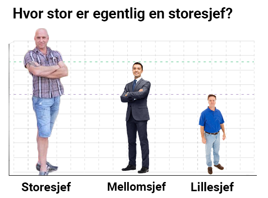

Hva er en storesjef?
En storesjef er en sjef som er mye større enn andre sjefer. En slik sjef finnes kun i noen ytterst få selskaper i Norge, og er ellers kun å finne i store internasjonale selskaper som f.eks. IBM, Mercedes-Benz og Disney.
Det finnes imidlertid et lite transportselskap på Klepp Stasjon som bestyres av en storesjef; nemlig
KPM Transport AS.

Hvor får jeg tak i en storesjef?
Dersom du ønsker å snakke med en storesjef, ta kontakt via:
Kurt Leon Håland
Telefon: 917 85 200
Epost:
kurt@storesjef.no